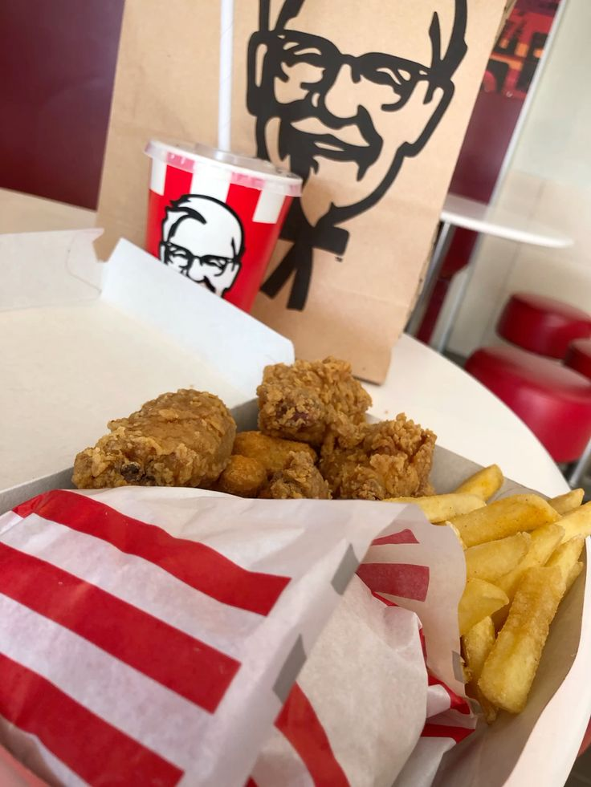

No hay nada como un buen taco al pastor, con su carne jugosa y especiada, cebolla y cilantro frescos, y una salsa de piña que le da ese toque dulce y picante. Me encanta disfrutar de ellos en una taquería local, rodeado de amigos, porque además de ser deliciosos, son un símbolo de la cultura mexicana.
Sushi
Disfruto mucho del sushi, especialmente los rolls con aguacate y atún fresco. La combinación de sabores y texturas, junto con la presentación estética, me atrae. Además, me gusta la variedad que ofrece, desde opciones más tradicionales hasta creaciones más innovadoras.

K-Tiras de KFC
Las tiras de KFC son otro de mis platillos favoritos. Su crujiente exterior y su carne jugosa son simplemente irresistibles. Me encanta acompañarlas con una buena salsa, ya sea barbecue o miel mostaza, para darle un extra de sabor. Además, son perfectas para compartir con amigos durante una película o una reunión.
Las tiras de KFC son otro de mis platillos favoritos. Su crujiente exterior y su carne jugosa son simplemente irresistibles. Me encanta acompañarlas con una buena salsa, ya sea barbecue o miel.